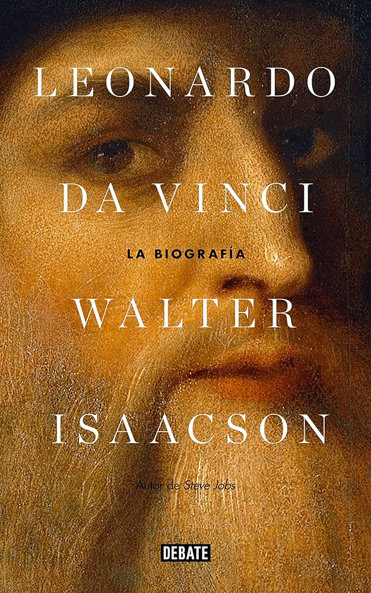

Dune
Género: Biografía
Autor: Walter Isaacson
Año de publicación: 2017
Link de compra: AMAZON
Género: Biografía
Autor: Walter Isaacson
Año de publicación: 2017
Link de compra: AMAZON
En la biografía magistral "Leonardo da Vinci" de Walter Isaacson, el lector se sumerge en la mente prodigiosa de uno de los genios más polifacéticos de la historia. Isaacson presenta una visión completa de la vida de Da Vinci, desde sus inicios en Vinci hasta su legado duradero como pintor, inventor, anatomista y pensador visionario del Renacimiento.
La narrativa revela los intrincados detalles de las obras maestras de Da Vinci, como "La Última Cena" y "La Mona Lisa", mientras explora sus cuadernos repletos de diseños, bocetos y observaciones científicas. Isaacson destaca la curiosidad insaciable de Da Vinci y su habilidad para conectar disciplinas aparentemente dispares.
A través de la biografía, los lectores descubren la personalidad multifacética de Da Vinci, desde su enfoque meticuloso en la anatomía hasta sus reflexiones filosóficas sobre la naturaleza y la vida. Isaacson arroja luz sobre las complejidades del hombre detrás de las obras, destacando sus relaciones, sus éxitos y sus luchas.
"Leonardo da Vinci" no solo es una crónica detallada de la vida de un genio renacentista, sino también un homenaje a la creatividad y la curiosidad como fuerzas impulsoras en la búsqueda del conocimiento. La obra invita a los lectores a contemplar el mundo a través de los ojos de Da Vinci y a apreciar la intersección única entre arte y ciencia en la mente de este icono eterno.